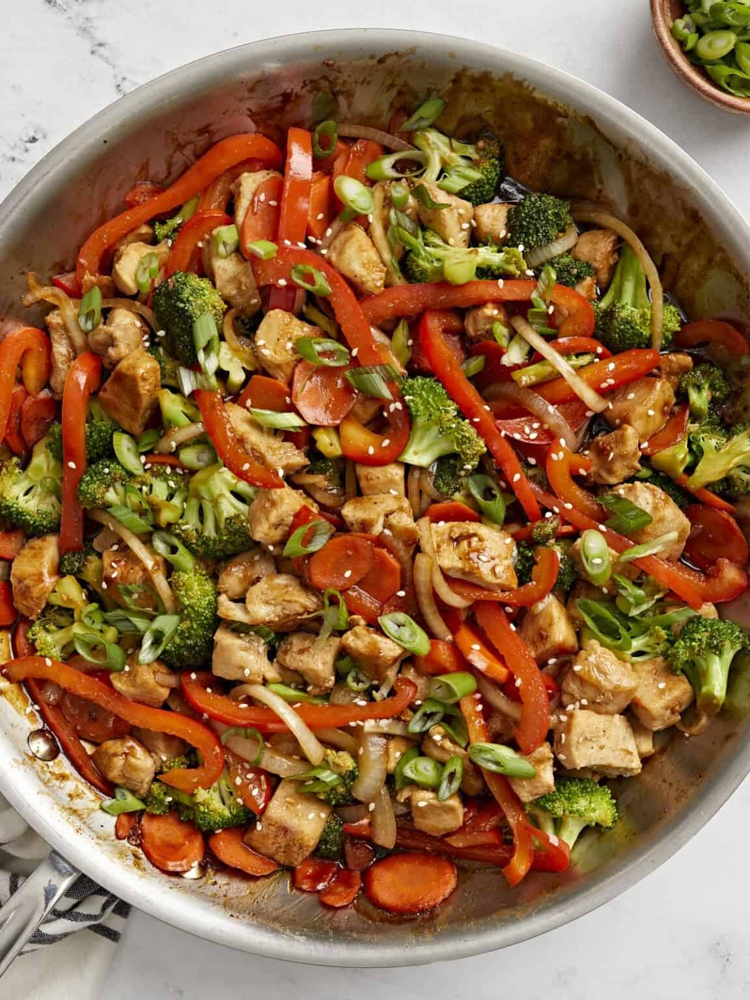

Chicken Stir-Fry

Description
Ingredients
- Meat Sauce: Ground beef/sausage, onion, garlic, crushed tomatoes, tomato paste, oregano, basil, salt, and pepper.
- Cheese Mixture: Ricotta, Parmesan, egg, salt, pepper, and optional parsley.
- Lasagna Noodles: 9-12 pieces, pre-cooked or oven-ready.
- Lasagna Noodles: 9-12 pieces, pre-cooked or oven-ready.
Steps
- Prepare the Meat Sauce: Cook ground beef/sausage with onion and garlic until browned. Add crushed tomatoes, tomato paste, oregano, basil, salt, and pepper. Simmer for 20-30 minutes.
- Make the Cheese Mixture: Mix ricotta, Parmesan, egg, salt, pepper, and parsley in a bowl until combined.
- Cook the Noodles: Boil lasagna noodles (if not oven-ready) according to package instructions. Drain and set aside.
- Layer the Lasagna: Spread a thin layer of sauce at the bottom of a baking dish, then layer noodles, cheese mixture, meat sauce, and mozzarella. Repeat layers, ending with mozzarella on top.
- Bake: Cover with foil and bake at 375°F (190°C) for 25 minutes. Uncover and bake for another 20 minutes until bubbly and golden. Let rest for 10 minutes before serving.
Home